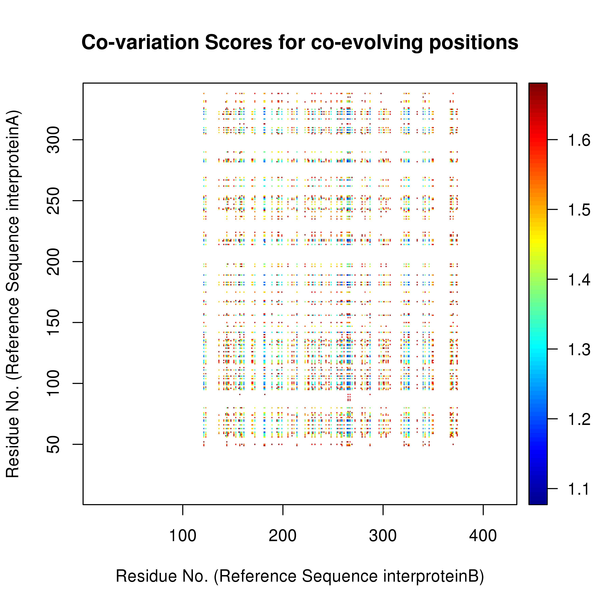
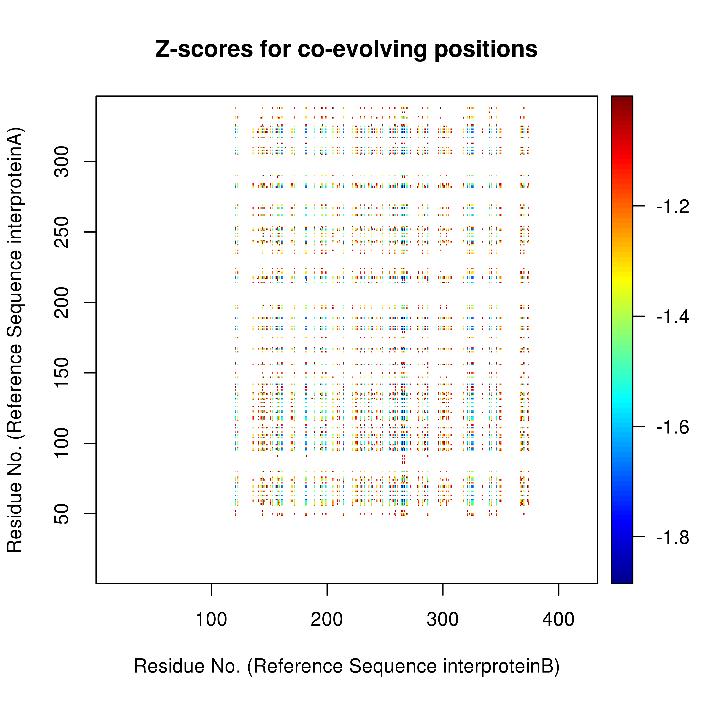

The results are being computed. Once the calculation is complete the results page will be updated and a link to the results will be emailed. Please be patient.
lower z-scores and lower co-var scores represent highly co-evolving positions.
 Download file with complete list
residues in close proximity that co-evolve
Download list of co-evolving positions in close proximityInter-residue distances of co-evolving positions

Residues at larger distances could also be co-evolving based on functional relevance